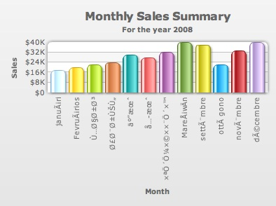

FusionCharts allows you to use multi-lingual (UTF-8) characters on the charts. Shown below is an example where we've used Arabic names on the chart:
You can use multi-lingual characters in all the charts in FusionCharts v3 suite.
FusionCharts supports only left-to-right languages as of now. It doesn't have native support for right-to-left languages like Hebrew. So, if you want to use Hebrew with FusionCharts, you'll have to programatically change the text sequence and then provide the data to FusionCharts.
To use multi-lingual characters on the chart, you necessarily need to use UTF-8 encoded XML. More importantly, the XML file/stream does require a BOM stamp to be present as the very first 3 Bytes of the file. Hence, one must remember the two basic thumb rules :
- for dataURL method - the XML file/stream should be having the BOM stamp and
- for dataXML method - the HTML/application file containing the XML as well as the chart SWF should have the BOM stamp.
| Standard (with BOM) | Gibberish (without BOM) |
 |
 |
- Open the file in question in a text-editor that supports UTF-8 encoding with BOM stamp (Example – Windows Notepad).
- Open the save menu and specify file name, file type, encoding and BOM mark (if the option is available).
- Save the file.
Ideally, in most of the cases you would NOT use a physical data file. Instead you'll have your own server side scripts virtually relay the XML data document to the chart. Thus this would come outside the scope of manual maintenance. Rather, you must write some code in the server side script to add the BOM stamp. The method is best practised when UTF-8 encoded strings are retrieved from databases and smilar locations. The implementation can be done using either of the two methods:
- Manually add BOM to the XML realyer script file - just like adding BOM stamp to the static XML files you can also add the BOM stamp to the server side file which would be realying the dynamically generaeted XML. This needs to be done when the script file is created for the first time before you start coding in it.
- Write BOM using script - In most cases the XML relayer script file might be created with ANSI encoded format. In this case, one needs to add the BOM using script at the very begining of the output stream. Moreover, when a server side script creates an XML file, it should add the BOM stamp as the very first 3 bytes of the file.
Response.ContentType = "text/xml; characterset=utf-8" ;
Response.BinaryWrite( new byte[] { 0xEF, 0xBB, 0xBF } );
// Now write your XML data to output stream
Response.ContentType = "text/xml"
Dim UTFHeader() As Byte = {&HEF, &HBB, &HBF}
Response.BinaryWrite(UTFHeader)
' Now write your XML data to output stream
header ( 'Content-type: text/xml' );
echo pack ( "C3" , 0xef, 0xbb, 0xbf );
// Now write your XML data to output stream
Response.AddHeader "Content-Type", "text/xml;charset=UTF-8"
Response.CodePage = 65001"
Response.BinaryWrite( chrb(239) )
Response.BinaryWrite( chrb(187) )
Response.BinaryWrite( chrb(191) )
' Now write your XML data to output stream
response.setContentType( "text/xml; charset=UTF-8" );
OutputStream outs = response.getOutputStream();
outs.write( new byte[]{(byte)0xEF, (byte)0xBB, (byte)0xBF} );
outs.flush();
// Now write your XML data to output stream
context = getPageContext();
response = context.getResponse().getResponse();
out = response.getOutputStream();
out.write(239);
out.write(187);
out.write(191);
// Now write your XML data to output stream
utf8_arr = [0xEF,0xBB,0xBF]
utf8_str = utf8_arr.pack("c3")
# Now write your XML data to output stream